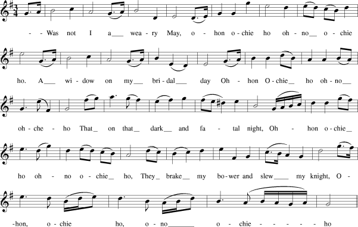

Ohon Ochie Ho - The Border Widow's Lament
Complainte de la Veuve du Border
The Murder Of Glencoe - Le massacre de Glencoe
"Scots Musical Museum", volume I N°89, page 22, 1783
Tune - Mélodie
"Oh Onochie O"
J. Oswald's "Caledonian Pocket Companion" (ca. 1758)
.
Variante
Scots Musical MuseumVol I #89 (1783)
Sequenced by Ch.Souchon

|
To the tune
This text is from a manuscript entitled "A Choice Collection of Several Scots Miscellanie Poems and Songs" dating back to 1715. It is tightly related to other songs, in particular a ballad by Laurence Pride, entitled " The Famous Flower of Serving Men " and dated from 1656, which is based on an earlier tale. (This ballad is included under N°106 in F.J. Child's "English and Scottish Popular Ballads"). The connection with the murder of Glencoe of the present song ensues from a note by Robert Burns, in the "Scots Musical Museum" , where this song is published in volume I page 90, under N° 89. Burns wrote a similar song which he connected with Culloden, The Highland Widow's Lament . The tune in the "Scots Musical Museum" was published earlier as "Oh Onochie O", in J. Oswald's "Curious Collection of Scots Tunes ", Edinburgh,1740, then in J. Oswald's "Caledonian Pocket Companion" (c 1758). A single verse of the song was set to music in Vol. I, page 22, of D. Corri's 'A New and Complete Collection of the most Favourite Scots Songs' , Edinburgh, (1783). Corri gives the tune (rather similar to Oswald's tune) as Irish: Oh was nae I a weary wight, Oh oh Onochie oh They braik my bower and slew my knight, Oh Onochie Onochie Onochie oh. Source: Mr Bruce O. contributor to "Mudcat Café" on 01.03.1998. (See links) |
A propos de la mélodie
Ce texte est tiré d'un manuscrit intitulé "Sélection de plusieurs poèmes et chants écossais divers" qui date de 1715. Il est étroitement relié à d'autres chants, en particulier à une ballade de Laurence Pride intitulée " Une perle de valet " datée de 1656 et qui est basée sur une intrigue plus ancienne. (Cette ballade figure sous le N°106 parmi les "Ballades populaires anglaises et écossaises" de F.J. Child). Le lien qui est établi entre le présent chant et le massacre de Glencoe résulte d'une note de Robert Burns dans le "Musée Musical Ecossais" où ce chant est publié dans le volume I, page 90, sous le N° 89. Burns écrivit un chant similaire qu'il rattacha à Culloden, Lamentation de la veuve des Highlands. . La mélodie du "Musée Musical Ecossais" avait été publiée antérieurement sous le titre de "Oh Onochie O" dans l'ouvrage d' Oswald, "Curieuse collection de mélodies écossaises ", édité à Edimbourg en 1740, puis dans son "Vadémécum Calédonien" en 1758. Une strophe isolée de ce chant fut mise en musique dans le Vol. I, page 22, du recueil de D. Corri, 'Nouveau recueil complet des chants écossais les plus connus' , Edimbourg, (1783). Corri donne l'air (assez semblable à celui d'Oswald) pour irlandais: J'étais le plus triste des êtres, Oh oh Onochie oh! Privée de biens, privée de maître! Oh Onochie Onochie Onochie oh. Source: M. Bruce O. contribution au "Mudcat Café" du 01.03.1998. (cf liens) |